Videos
Schools
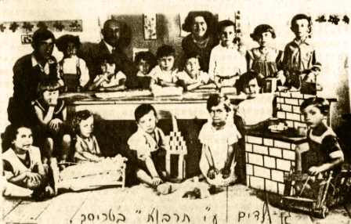
Hebrew kindergarden

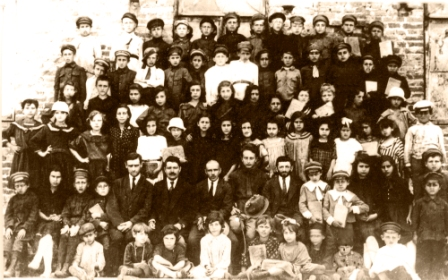
Yidish school
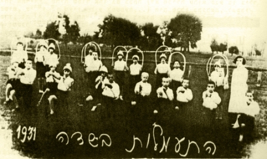
Gymnastics and culture school

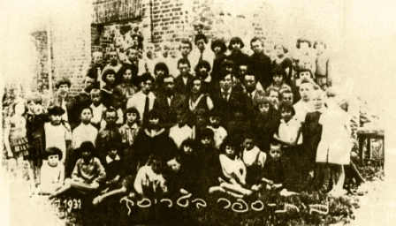
A class in hebrew school


Town buildings
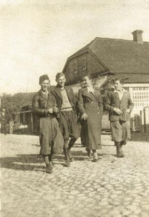
A living house

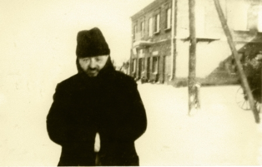
The bakery

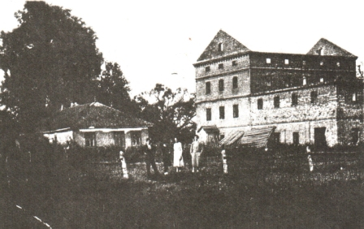
The burned flour mill

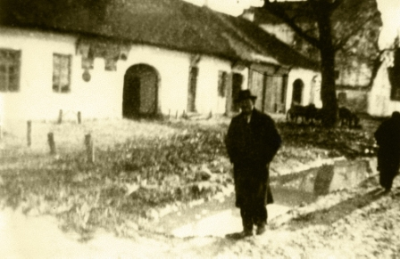
The Honikman house
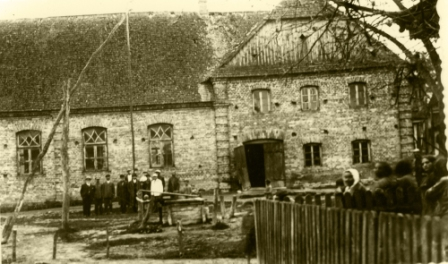
The big synagouge


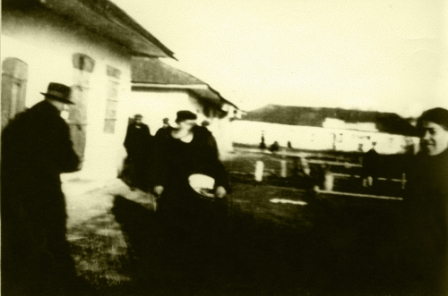
Shops in the market

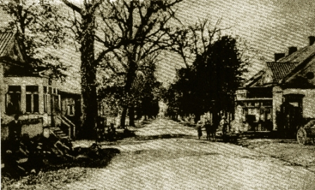
The rebbe's court

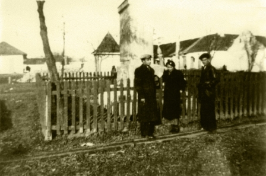
A memorial


Political Movements
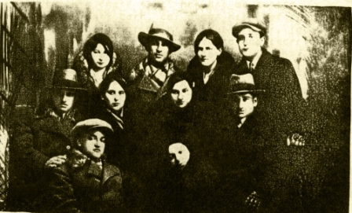
Activists


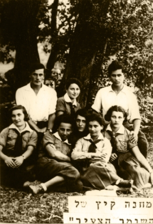
Summer camp Hashomer Hazair
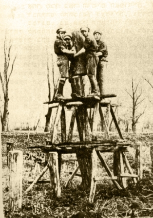
Hachshara group
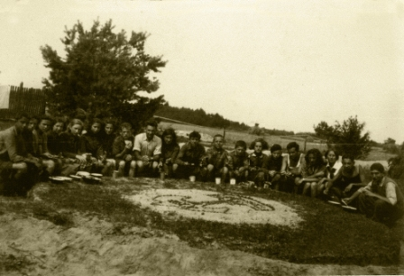
Bney Midbar camp
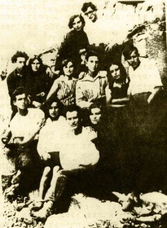
The Klosova Hachshara


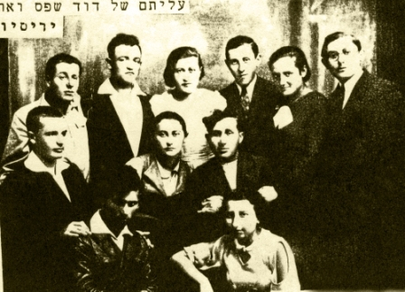
Pioneers before immigration
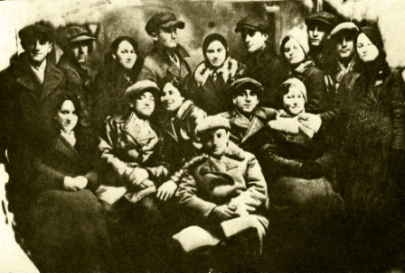
Pioneers before immigration
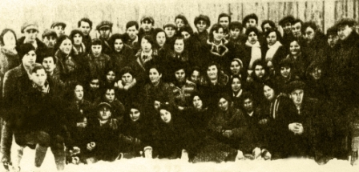
Regional assembly of Hashomer Hazair
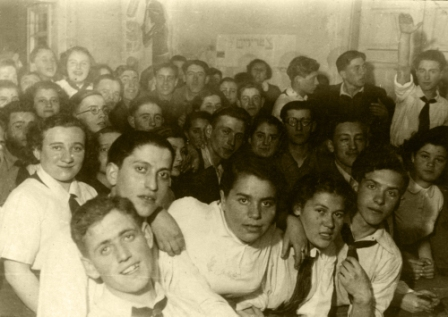
Rally of Hashomer Hazair adults

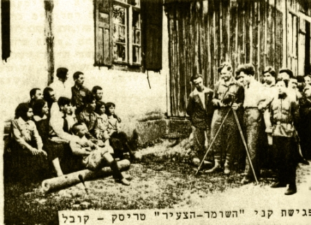
Rally of Kovel and Turisk nests
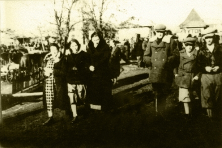
Walking in the streets


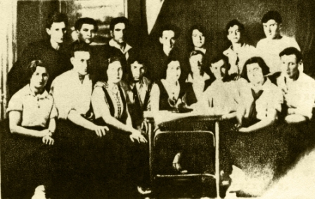
Bund activists

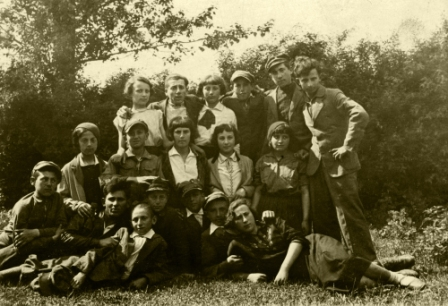
Yarden group of Hashomer Hazair
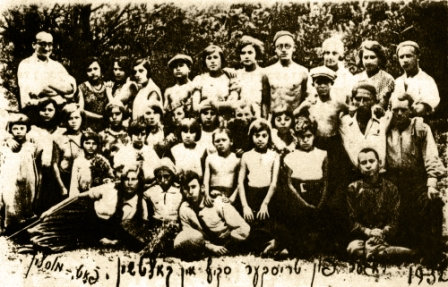
The Bund youth movement
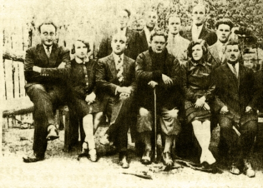
The poet Zoosie Weinper visits movement

The Cemetery

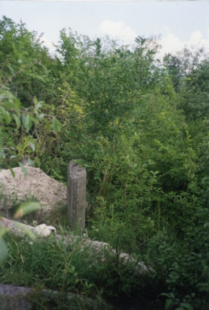
The ruined graveyard (taken at 1993)

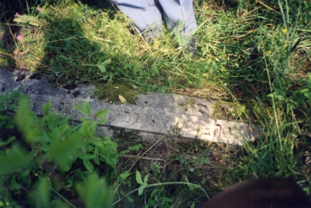
The ruined graveyard (taken at 1993)


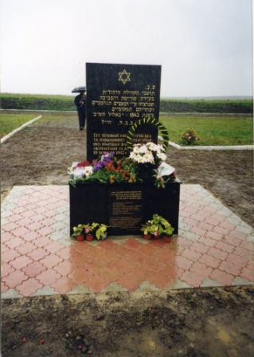
The grave of the mass murder
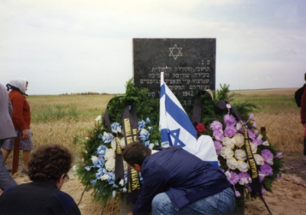
The grave of the mass murder
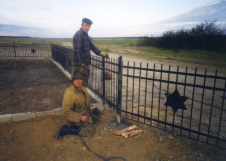
Building the new fence for the site